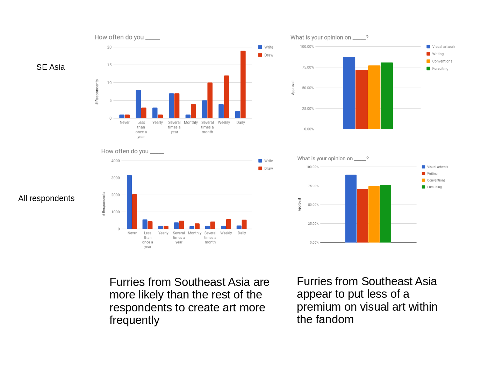
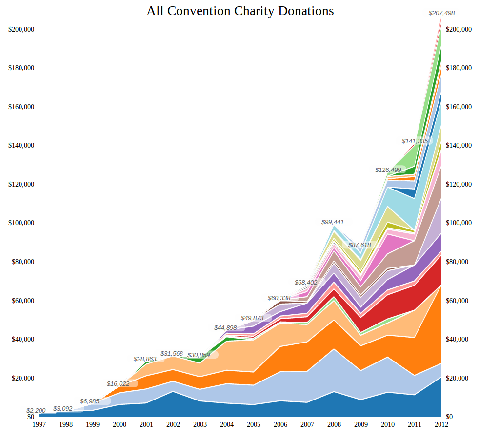

Exploring the Fandom Through Data
- Exploring the fandom through data
- Introduce
Why?
Why
Furry is interesting
- Furry is interesting
- Growing fast
- Hard to estimate growth but there are some ways - responses vs convention attendance
- No membership requirements
- Spans boundaries
There's a lot to explore
- there's a lot to explore
- Understanding individual aspects
- Understanding change over time
- Making sense of the fandom as a whole
So what is exploring?

So what is exploring
- Collection
- First we need to collect information
- Two main resources
- Objective data: surveys and spelunking for outside data
- Subjective: introspection and talking/writing
- Look for stories
- Understanding
- Looking through data
- Verifying against other sources
- Deciding on interesting points
- Find a story
- Giving back
- Data presentation, visualization, description, and accessibility
- Tell the stories we learned
- Dialog
- Sharing, social currency
- Commenting
- Differing opinions
- What's missing? What other stories need telling?
- Exploration is really a cycle
- Collect data, piece it together into a story, pull it into a presentable format, start a dialog, learn what/where/how to collect next time
For example...
- Here's an example of a story told through data
- James wanted to explore the creativity within the southeast asian furry culture
- Do they approach creativity differently from other respondents?

- Pulled the data into a visualization
- SE asian furries more likely to create art more frequently, but put less of a premium on visual art

- Started a dialog with awareness week
- Learn where to go next
Good
What do we have to work with?
- What do we have to work with
- IARP/Nuka/Gerbasi
- Furry survey
- [a][s]
- Scraped data
- introspection, but we'll get into that later

- It's hardly big data
- But it can still be representative
What have we learned so far?
- what have we learned so far?
- Quite a bit really
- Diverse fandom in some ways, but not others
- Growing fast
- Problems with our own definition
- But that's okay, leads to looser membership "requirements"
Before I continue...
- Before i continue, want everyone to pay attention to something
- Going to talk about the following:
- Age
- Race
- Gender
- Relationships and orientaiton
- Political views
- Importance of sex
- Pay attention to your own reaction
- Look around and see how this compares to what you observe
- What is surprising and new?
- What did you already expect was the case?
- Will explain why this is important after
Furry status
- first of all, who are we talking about?
- 2016 survey
- Primarily self-identified furries
Age distribution
- Age distribution
- Furry is young
- Still a long tail~
- Does this imply that there's a dropout age, or just that furry attracts primarily younger people?
Racial distribution
- Racial distribution
- Far and away white
- Fairly stable over time, may be diversifying
- What sort of story could lead to this data? (affluence?)
Gender
Several tidbits
Have several things related to gender
Gender identity
- Pretty wide gap there
- Note that when options were diversified, things became a bit more balanced
Gender identity
- Gender identity: scatter
- To explain, we offered a continuum of masculine to feminine, strongly identify to not identify at all for people to be more specific
- Can still see a strong cluster over towards strongly male
Gender identity
- Gender identity: heat
- Can see this much better with a heat map
Gender expression
- Gender expression: scatter
- Similarly, asked about how gender was expressed to others
- Similar results, but perhaps not as strongly male
Gender expression
- Gender expression: heat
- Can see the heatmap diversifying
Gender in furry
- Gender in furry: scatter
- Here we asked about how one expresses one's gender within furry
- Again, more diverse than identity next
Gender in furry
- Gender in furry: heat
- But perhaps less so than the previous expression heatmap
Gender alignment
- Gender alignment
- Gender alignment - whether one feels one's gender is aligned with their body - is sort of how these things play out
Relationships
Also have some interesting things related to relationships
Orientation
- Kind of heartening in its diversity
- Anecdote about 10%
- More even spread along the kinsey scale
- Why?
- Also, tie in with previous slides: large number of same-sex relationships due to skewed gender numbers (i.e: many who identify as bi wind up in same-sex relationships)
Relationship status
- Relationship status
- Perhaps more single than expected
Relationship status open/closed - Romantic
- next two slides about polyamory and open/closed relationships
- This one about romantic polyamory
Relationship status open/closed - Sexual
- this one about sexual openness
- More closed than romantic
Relationship status partner is furry
- Partner is furry five year mean
- Maybe surprising how many respondents have nonfurry partners
Political views
Political views
Social
- Fairly socially liberal
- less so over time, but those left of center still made up >70%
Economics
Much more moderate/centrist economically, favoring some restrictions rather than laissez-faire
The importance of sex
Lets talk (in a very abstract way) about how we view sex within the fandom
The importance of sex - Personal
- Importance of sex within furry to oneself
- Perhaps a little surprising, not terribly important to us as individuals
The importance of sex - Others
- Perceived importance of sex within furry to others
- More important than to oneself
The importance of sex - From the public's perspective
- Perceived importance of sex within furry to the public
- Big difference
- What does this say? Are we crazy sexual, or just defensive about sexuality
Doxa and introspection
- Asked you to pay attention to your reactions
- What is doxa? What we accept as truth without needing proof, common belief and judgement
- What is the doxa within the fandom?
- Look at the data: what is intuitive and what is surprising?
Letting go of doxa
- sometimes it's necessary to let go of an idea
- Can be difficult, but necessary
- For example, wanted to explore average charity donation per con attendee
- Expected donation/attendee to increase as attendance increased due to social aspect of giving

Reality is more complicateD

- total donations have increased, but donations aren't just from attendees
- Have to let go of a concept in order to get down to the truth of things
Where do we go from here?
- Where do we go from here
- this was part of our dialog
There is a lot of data

Needs to be sorted, stories need to be found

- What do we need to collect?
- Where can studies be improved?
- Where can we gain more information?
- Open for questions
- Have lots of data to look at if you want - furry surveys, e621, sofurry